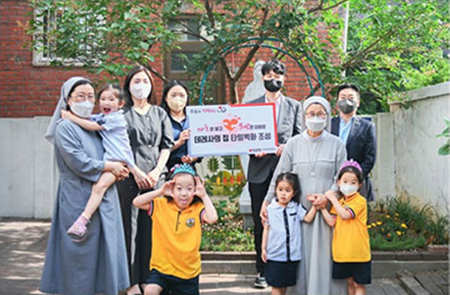
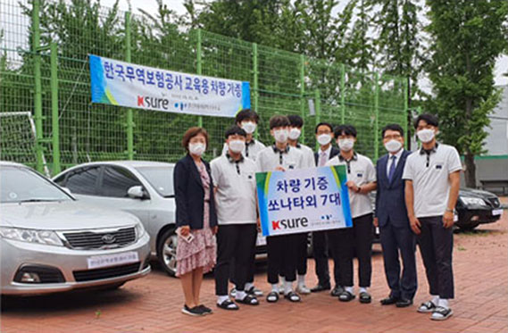
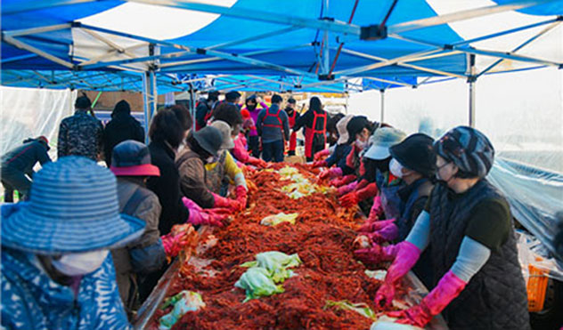
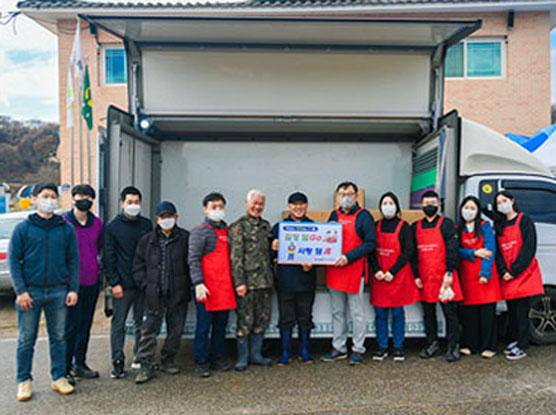
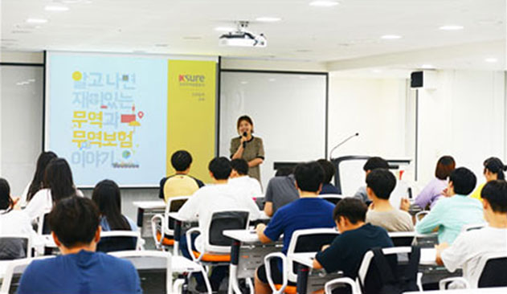
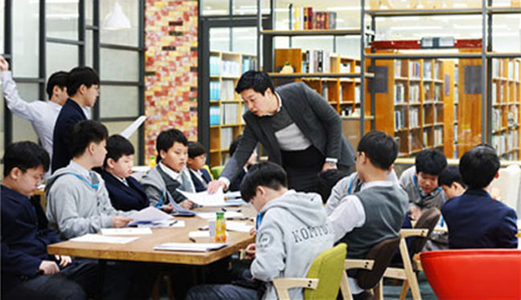

ESG 주요 활동
사회(Social)
정기적인 후원과 봉사활동으로 따뜻한 나눔 실천
- 공사는 데레사의 집(아동 양육 보호시설), 라파엘의 집(장애아동 생활시설) 등에 정기적으로 후원을 하고 있으며, 일손을 덜어드리기 위한 봉사활동 또한 지속적으로 수행하고 있습니다.


1사1촌 자매결연을 통한 농촌 마을과의 교류 지속
- 경기도 객현리 농촌과 1사1촌 자매결연을 맺어 농촌 일손돕기 봉사활동 행사, 마을 주민을 초청한 문화 행사 개최 등 다양한 지원 활동을 전개하고 있습니다.


다양한 교육 기부 프로그램 수행
- 공사는 미래 인재 발굴, ‘무역’에 특화된 경제 교육 수행을 위해 초 · 중 · 고등학생, 대학생 등 전 연령을 대상으로 다양한 교육 기부 프로그램을 운영하고 있습니다.
- 이러한 노력을 인정받아 공사는 ‘교육기부 우수기관(’23~’25)‘ 및 ’진로체험 우수기관(’21~’24)‘ 인증을 동시에 획득하고 교육부 주관 대한민국 교육 기부 대상을 수상하였습니다.

